| Java Web |
|---|
Web服务器
服务器是一种被动的操作，用来处理用户的一些请求和给用户一些响应信息。
IIS：
- 微软
- ASP，Windows自带
Tomcat：(手撸Tomcat)
- 性能稳定，开源免费
- 轻量级应用服务器：用于中小型系统和并发访问用户不是很多的场合下使用
- 实际运行JSP页面和Servlet，目前Tomcat最新版本为10.0.5
Tomcat
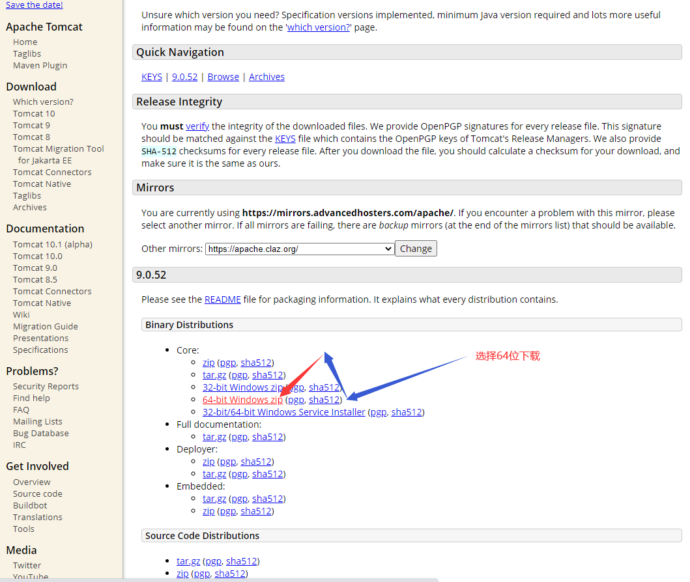无需安装，选择路径解压即可使用。
Tomcat的启动与配置
启动：双击 –> bin/startup.bat，弹出窗口
浏览器输入：http://localhost:8080/ ，显示页面如下即表示成功。
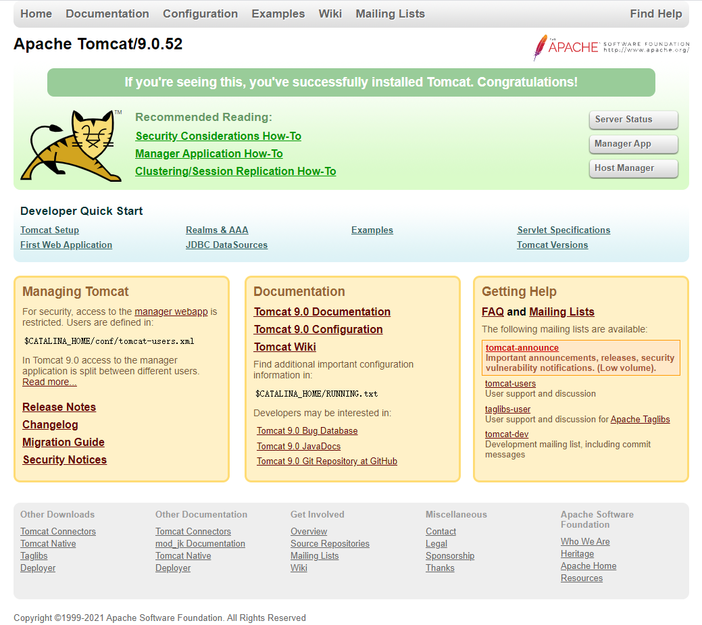关闭：点击X，或者双击 –> bin/shutdown.bat
核心配置文件：
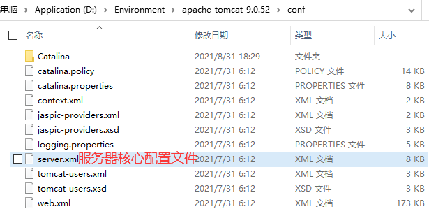
可以配置启动的port端口号（默认8080）：
<Connector port="8080" protocol="HTTP/1.1"
connectionTimeout="20000"
redirectPort="8443" />发布一个Web网站
写的网站放在webapps文件夹下即可。
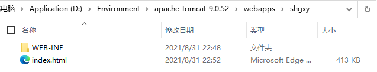
网站该有的结构：
--webapps :Tomcat服务器的web目录
-ROOT
-shgxy :自己搭建的网站目录名
- WEB-INF
-classes :java程序
-lib :web应用所依赖的jar包
-web.xml :网站配置文件
- index.html
- static
-css
-style.css
-js
-img
- ...others...Maven
Maven是一个项目架构管理工具，可以用来方便地导入jar包。
Maven 核心思想：约定大于配置。
- 有约束，勿违反
下载
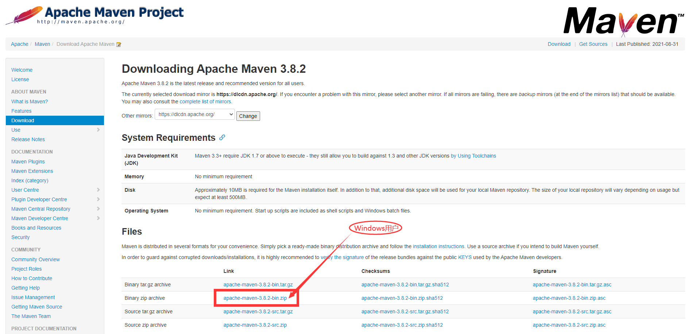解压即可。
配置
环境变量：
配置环境变量，操作如下：
- M2_HOME：bin目录
- MAVEN_HOME：根目录
- Path：%MAVEN_HOME%\bin
配置好，命令窗输入mvn -version，出现如下所示，即代表配置完成。
C:\Users\userName>mvn -version
Apache Maven 3.8.2 (ea98e05a04480131370aa0c110b8c54cf726c06f)
Maven home: D:\Environment\apache-maven-3.8.2
Java version: 11.0.11, vendor: Oracle Corporation, runtime: C:\Program Files\Java\jdk-11.0.11
Default locale: zh_CN, platform encoding: GBK
OS name: "windows 10", version: "10.0", arch: "amd64",family: "windows"镜像加速：
修改conf/settings.xml，在<mirrors>标签下插入下面内容：
<mirror>
<id>nexus-aliyun</id>
<mirrorOf>*,!jeecg,!jeecg-snapshots</mirrorOf>
<name>Nexus aliyun</name>
<url>http://maven.aliyun.com/nexus/content/groups/public</url>
</mirror> 本地仓库
建立一个本地仓库：
- 修改
conf/settings.xml，在<localRepository>标签下插入下面内容：
<localRepository>D:\Environment\apache-maven-3.8.2\maven-repo</localRepository>IDEA中使用Maven
创建项目：
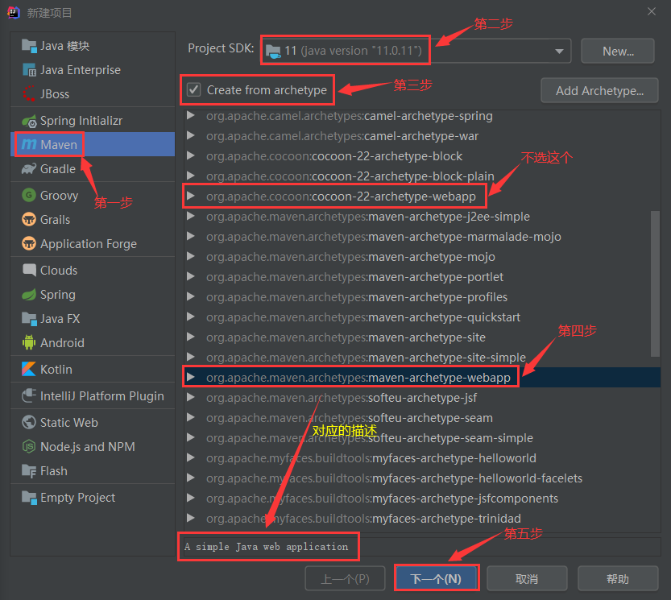
命名：
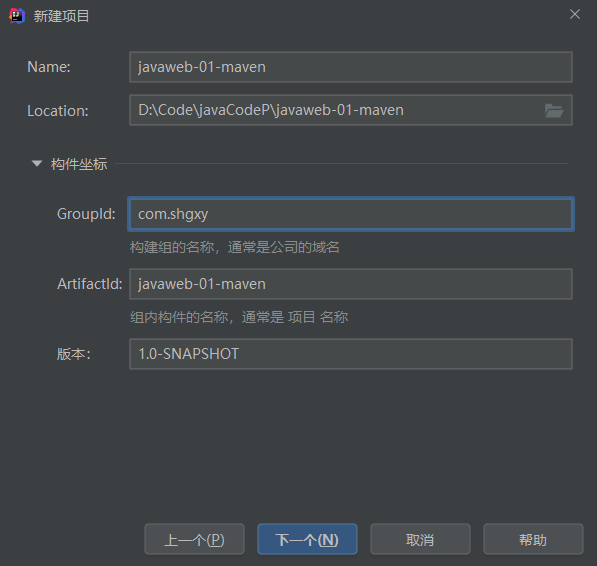
配置地址：
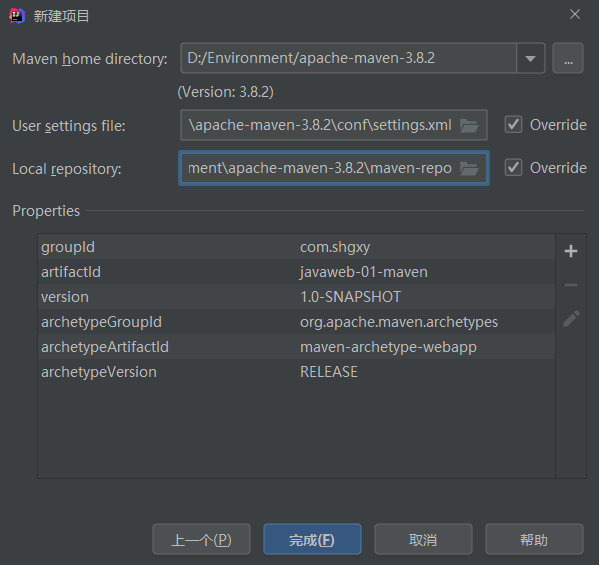
点击完成，再点 Enabled Auto-Import ，等待项目初始化完毕：
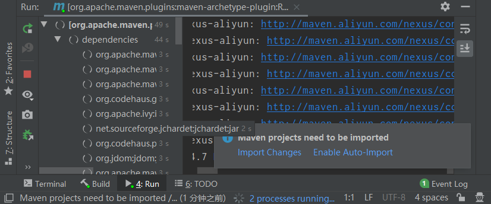
出现 BUILD SUCCESS 即表示初始化完成：
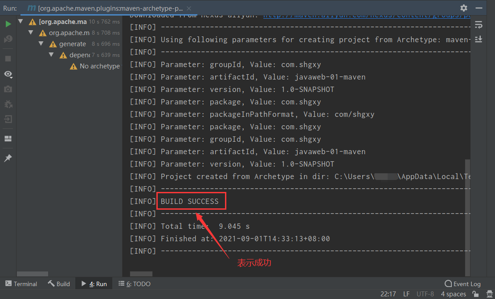
maven-repo 中出现如下文件夹：

项目创建成功后，看一眼Maven的配置（谨防选在了C盘或者其他.m2文件夹下），如下图
至此，Maven在IDEA中的配置和使用就OK了。
新建Maven空项目
步骤即省略了上一节”创建项目“中的复杂步骤，直接点击下一步，后续步骤不变。
小问题
抛出几个如下类型的错误语句：
Could not transfer artifact org.codehaus.plexus:plexus-components:pom:1.1.14 from/to central (https://repo.maven.apache.org/maven2): Tag mismatch!
Cannot resolve plugin org.apache.maven.plugins:maven-surefire-plugin:2.12.4
等等。
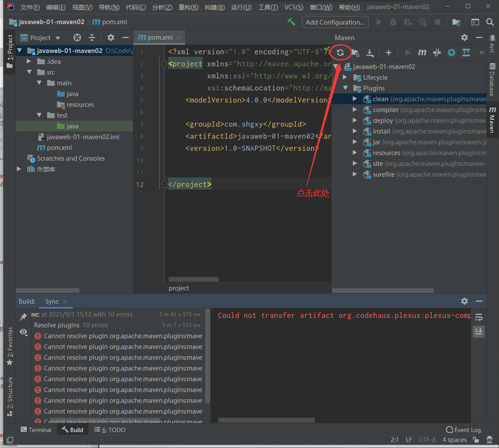
点击 🔄 按钮，静候下载完成即可，如下图所示：
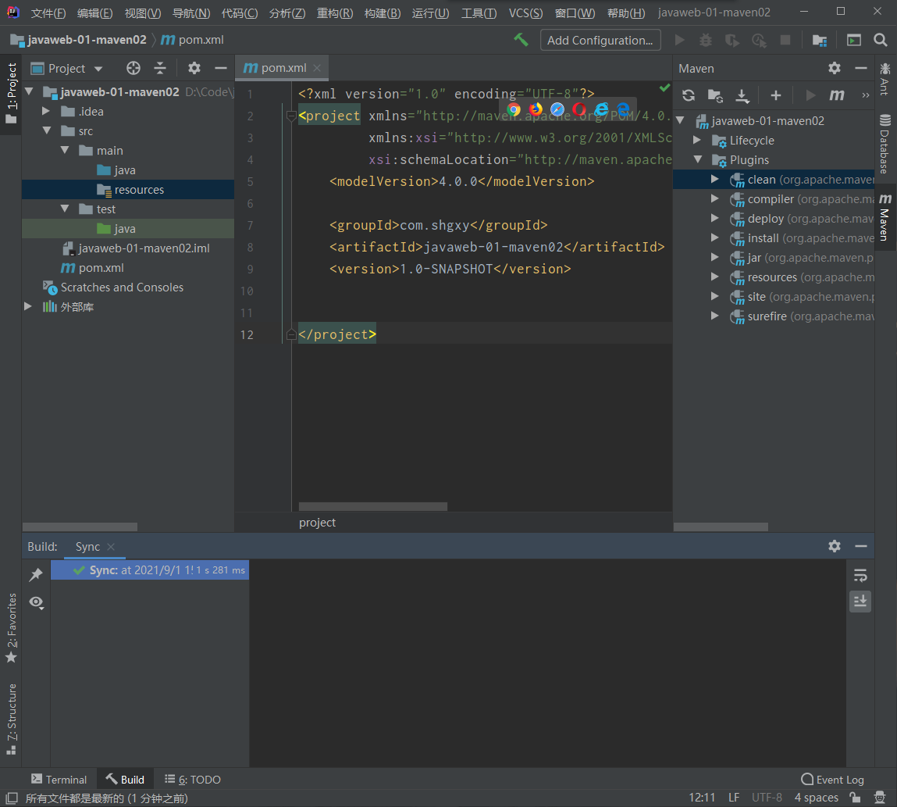初始的配置文件pom.xml：
<?xml version="1.0" encoding="UTF-8"?>
<project xmlns="http://maven.apache.org/POM/4.0.0"
xmlns:xsi="http://www.w3.org/2001/XMLSchema-instance"
xsi:schemaLocation="http://maven.apache.org/POM/4.0.0 http://maven.apache.org/xsd/maven-4.0.0.xsd">
<modelVersion>4.0.0</modelVersion>
<groupId>com.shgxy</groupId>
<artifactId>javaweb-01-maven02</artifactId>
<version>1.0-SNAPSHOT</version>
</project>标记文件夹的功能

IDEA中配置Tomcat
运行 –> 编辑配置，打开如下图所示的界面：
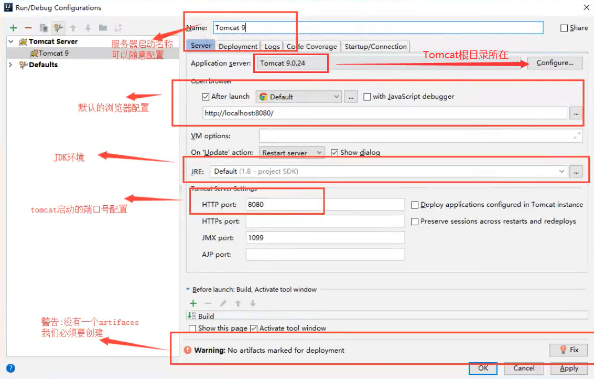解决警告问题（必须要有的操作）：
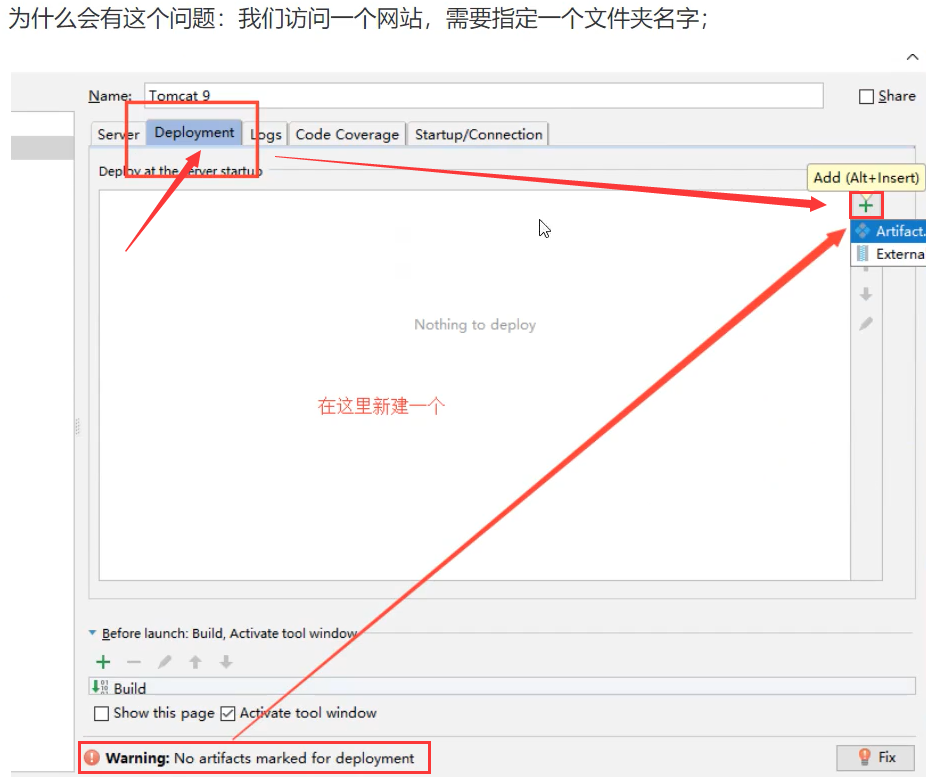启动：
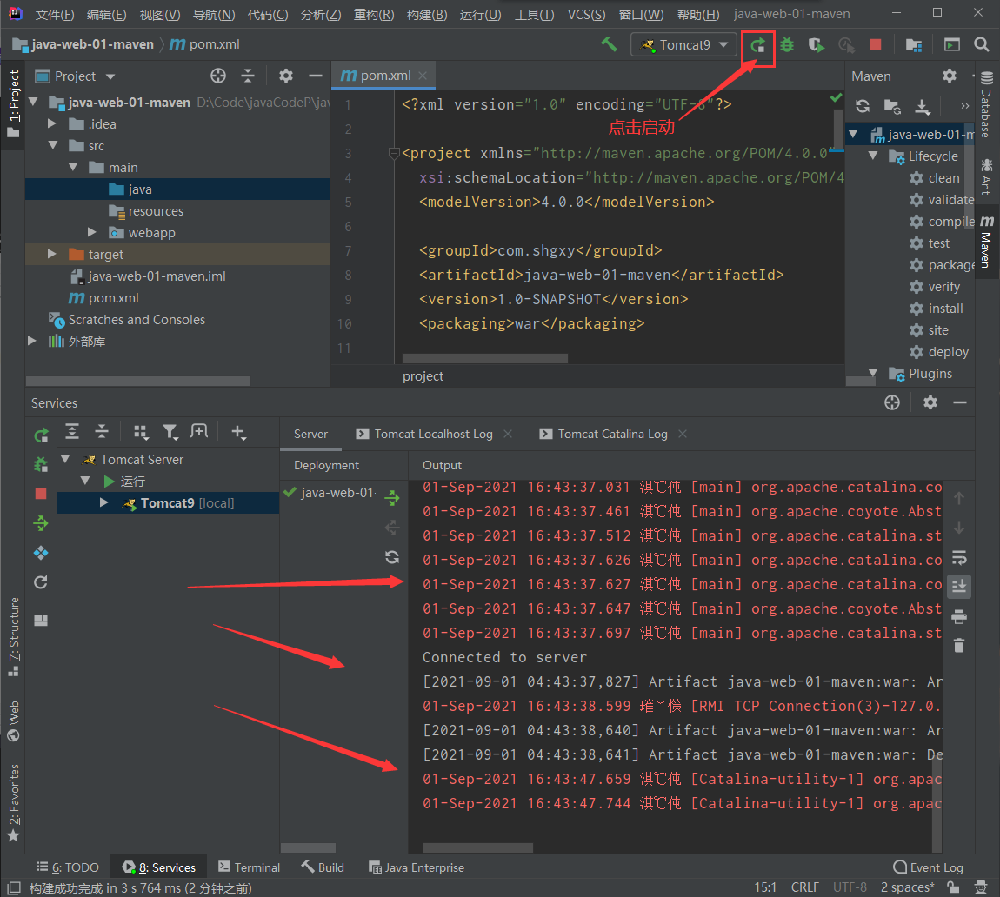此时Chrome弹出”Hello World!”界面。
pom文件
pom.xml是Maven的核心配置文件。
<?xml version="1.0" encoding="UTF-8"?>
<!--Maven版本和头文件-->
<project xmlns="http://maven.apache.org/POM/4.0.0" xmlns:xsi="http://www.w3.org/2001/XMLSchema-instance"
xsi:schemaLocation="http://maven.apache.org/POM/4.0.0 http://maven.apache.org/xsd/maven-4.0.0.xsd">
<modelVersion>4.0.0</modelVersion>
<!--配置的G、A、V-->
<groupId>com.shgxy</groupId>
<artifactId>java-web-01-maven</artifactId>
<version>1.0-SNAPSHOT</version>
<!--Package：项目的打包方式
jar：java应用
war：javaWeb应用
-->
<packaging>war</packaging>
<!--配置-->
<properties>
<!--项目的默认构建编码-->
<project.build.sourceEncoding>UTF-8</project.build.sourceEncoding>
<!--编码版本-->
<maven.compiler.source>1.7</maven.compiler.source>
<maven.compiler.target>1.7</maven.compiler.target>
</properties>
<!--项目依赖-->
<dependencies>
<!--具体依赖的jar包配置文件-->
<dependency>
<groupId>junit</groupId>
<artifactId>junit</artifactId>
<version>4.11</version>
<scope>test</scope>
</dependency>
</dependencies>
<!--项目构建的东西-->
<build>
<finalName>java-web-01-maven</finalName>
<pluginManagement><!-- lock down plugins versions to avoid using Maven defaults (may be moved to parent pom) -->
<plugins>
<plugin>
<artifactId>maven-clean-plugin</artifactId>
<version>3.1.0</version>
</plugin>
<!-- see http://maven.apache.org/ref/current/maven-core/default-bindings.html#Plugin_bindings_for_war_packaging -->
<plugin>
<artifactId>maven-resources-plugin</artifactId>
<version>3.0.2</version>
</plugin>
<plugin>
<artifactId>maven-compiler-plugin</artifactId>
<version>3.8.0</version>
</plugin>
<plugin>
<artifactId>maven-surefire-plugin</artifactId>
<version>2.22.1</version>
</plugin>
<plugin>
<artifactId>maven-war-plugin</artifactId>
<version>3.2.2</version>
</plugin>
<plugin>
<artifactId>maven-install-plugin</artifactId>
<version>2.5.2</version>
</plugin>
<plugin>
<artifactId>maven-deploy-plugin</artifactId>
<version>2.8.2</version>
</plugin>
</plugins>
</pluginManagement>
</build>
</project>maven由于他的约定大于配置，我们之后可以能遇到我们写的配置文件，无法被导出或者生效的问题。
解决方法：在build中配置resources，来防止我们资源导出失败的问题。
在dependency标签中填写GAV即可导入jar包，jar包的GAV信息可以在maven仓库检索。
Maven可以自动导入jar包依赖的其他包
<?xml version="1.0" encoding="UTF-8"?>
<project xmlns="http://maven.apache.org/POM/4.0.0"
xmlns:xsi="http://www.w3.org/2001/XMLSchema-instance"
xsi:schemaLocation="http://maven.apache.org/POM/4.0.0 http://maven.apache.org/xsd/maven-4.0.0.xsd">
<modelVersion>4.0.0</modelVersion>
<groupId>org.example</groupId>
<artifactId>maven-no-template</artifactId>
<version>1.0-SNAPSHOT</version>
<properties>
<maven.compiler.source>8</maven.compiler.source>
<maven.compiler.target>8</maven.compiler.target>
</properties>
</project>在maven仓库中寻找依赖并使用：
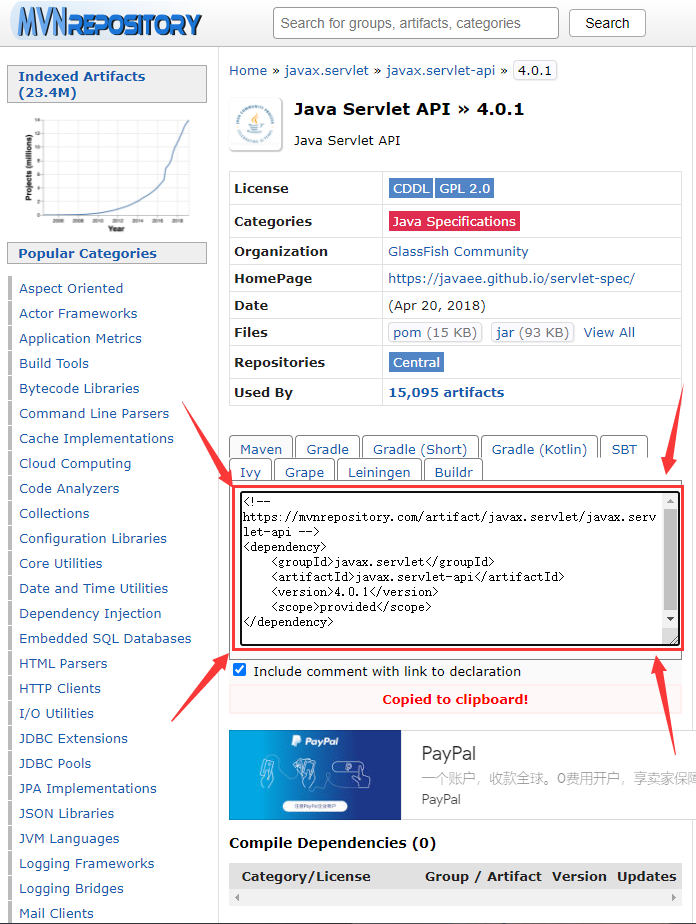
Servlet
Servlet是SUN公司开发的动态web技术。
开发一个 Servlet 程序的两个小步骤：
- 编写一个类，实现Servlet接口
- 有两个默认的实现类
HttpServletGenericServlet
- 有两个默认的实现类
- 将开发好的Java类部署到Web服务器中
HelloServlet
步骤：
- 构建一个Maven项目（javaweb-02-servlet），删掉里面的 src 目录，以后就在此项目里建立module（如 servlet-01）；导入仓库中的依赖（放在
<dependencies>标签下）：
<dependencies>
<!-- https://mvnrepository.com/artifact/javax.servlet/javax.servlet-api -->
<dependency>
<groupId>javax.servlet</groupId>
<artifactId>javax.servlet-api</artifactId>
<version>4.0.1</version>
</dependency>
<!-- https://mvnrepository.com/artifact/javax.servlet.jsp/javax.servlet.jsp-api -->
<dependency>
<groupId>javax.servlet.jsp</groupId>
<artifactId>javax.servlet.jsp-api</artifactId>
<version>2.3.3</version>
</dependency>
</dependencies> 导入仓库中的依赖时，可以删掉以下语句：
<scope>provided</scope> <!--可以删掉这个作用域关于Maven父子工程的理解：
父项目会有：
<modules>
<module>servlet-01</module>
</modules> 子项目会有：
<parent>
<artifactId>javaweb-02-servlet</artifactId>
<groupId>com.shgxy</groupId>
<version>1.0-SNAPSHOT</version>
</parent>父项目中的 java 子项目可以直接用。
Maven环境优化
- 修改web.xml为最新的（Tomcat文件夹下的同名文件复制过来）
- 将Maven的结构搭建完整
编写一个Servlet程序
- 编写一个普通类
- 实现Servlet接口，如直接继承
HttpServlet
public class HelloServlet extends HttpServlet { @Override protected void doGet(HttpServletRequest req, HttpServletResponse resp) throws ServletException, IOException { //ServletOutputStream stream = resp.getOutputStream(); PrintWriter writer = resp.getWriter();//响应流 writer.println("Hello,Servlet!"); } @Override protected void doPost(HttpServletRequest req, HttpServletResponse resp) throws ServletException, IOException { doGet(req, resp); } }编写Servlet的映射
servlet-class是映射类，url-pattern是映射路径；为什么需要映射：我们写的是JAVA程序，但是要通过浏览器访问，而浏览器需要连接web服务器，所以我们需要再web服务中注册我们写的Servlet，还需给他一个浏览器能够访问的路径；
<!--注册Servlet (于web.xml中配置)--> <servlet> <servlet-name>hello</servlet-name> <servlet-class>com.shgxy.serclet.HelloServlet</servlet-class> </servlet> <!--Servlet的请求路径--> <servlet-mapping> <servlet-name>hello</servlet-name> <url-pattern>/hS</url-pattern> </servlet-mapping>配置Tomcat
启动测试，
浏览器输入：http://localhost:8080/servlet_01_war/hS
弹出：Hello,Servlet!
方便看函数名：源码当前类右键 –> 折叠 –> 全部折叠
Servlet原理
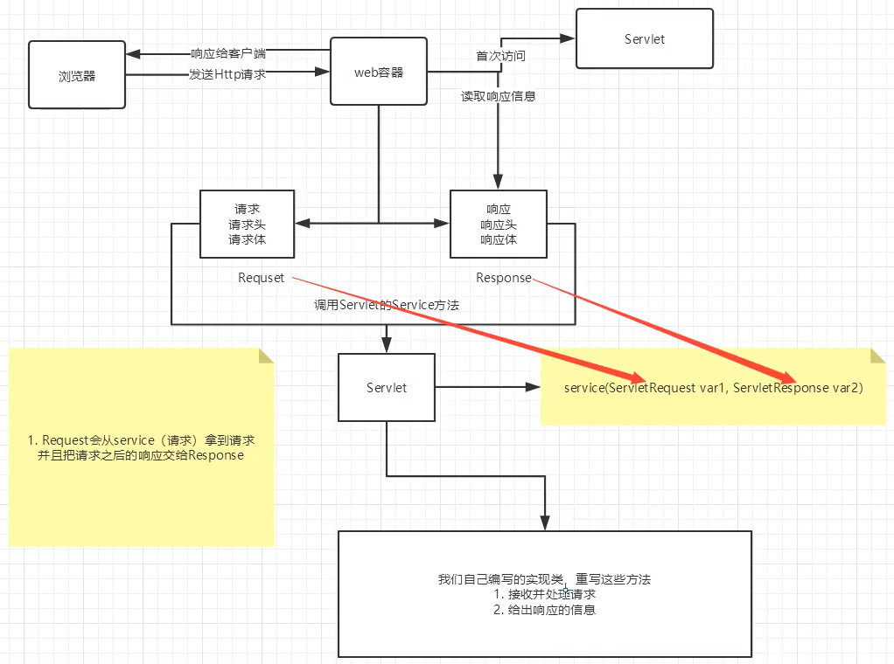
Mapping问题
- 映射地址可以是一对一，也可以是一对多
- 映射地址中可以使用
/*通配符 - 优先走具体的映射，默认是
/* - 指定一些后缀或者前缀等等，如
*.shgxy.com
ServletContext()
web容器在启动的时候，它会为每个web程序都创建一个对应的ServletContext对象，它代表了当前的web应用；
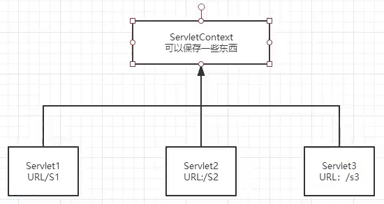
共享数据
HelloServlet.java
public class HelloServlet extends HttpServlet {
@Override
protected void doGet(HttpServletRequest req, HttpServletResponse resp) throws ServletException, IOException {
//this.getInitParameter(); 初始化参数
//this.getServletConfig(); Servlet配置
//this.getServletContext(); Servlet上下文
ServletContext context = this.getServletContext();
String username = "shgxy";
context.setAttribute("username",username);//将一个数据保存在了ServLetContext中,名字为: userName,值userName
}
}GetServlet.java
public class GetServlet extends HttpServlet {
@Override
protected void doGet(HttpServletRequest req, HttpServletResponse resp) throws ServletException, IOException {
ServletContext context = this.getServletContext();
String username = (String) context.getAttribute("username");
resp.setContentType("text/html;charset=utf-8");
resp.getWriter().print("姓名："+username);
}
}web.xml
<servlet>
<servlet-name>hell</servlet-name>
<servlet-class>com.shgxg.servlet.HelloServlet</servlet-class>
</servlet>
<servlet-mapping>
<servlet-name>hell</servlet-name>
<url-pattern>/hells</url-pattern>
</servlet-mapping>
<servlet>
<servlet-name>getC</servlet-name>
<servlet-class>com.shgxg.servlet.GetServlet</servlet-class>
</servlet>
<servlet-mapping>
<servlet-name>getC</servlet-name>
<url-pattern>/getCon</url-pattern>
</servlet-mapping>GetServlet.java 获取 HelloServlet.java 中的username 的共享数据。
获取初始化参数
web.xml
<!--配置一些web应用的初始化参数-->
<context-param>
<param-name>url</param-name>
<!-- 接口:数据库类型://主机名：端口号/数据库-->
<param-value>jdbc:mysql://localhost:3306/mybatis</param-value>
</context-param>ServletDemo03.java 获取 web.xml中配置的url。
@Override
protected void doGet(HttpServletRequest req, HttpServletResponse resp) throws ServletException, IOException {
ServletContext context = this.getServletContext();
String url = context.getInitParameter("url");
resp.getWriter().println(url);
}请求转发
RequestDispatcher dispatcher = context.getNamedDispatcher("/gp");//转发的请求路径
dispatcher.forward(req,resp);//调用forward实现请求转发读取资源文件
要想读取资源文件，就要知道打包后资源文件的位置。main/resources目录下新建一个名为db.properties的文件。
name=root
password=123123打包之后将会保存到WEB-INF/db.properties。
如果main/java路径下有资源文件，需要在项目的pom.xml文件中手动添加资源路径（重启IDEA后生效）：
<build>
<resources>
<resource>
<directory>src/main/resources</directory>
<includes>
<include>**/*.properties</include>
<include>**/*.xml</include>
</includes>
<filtering>true</filtering>
</resource>
<resource>
<directory>src/main/java</directory>
<includes>
<include>**/*.properties</include>
<include>**/*.xml</include>
</includes>
<filtering>true</filtering>
</resource>
</resources>
</build>配置xml：
<servlet>
<servlet-name>sd5</servlet-name>
<servlet-class>com.shgxg.servlet.ServletDemo05</servlet-class>
</servlet>
<servlet-mapping>
<servlet-name>sd5</servlet-name>
<url-pattern>/sd5</url-pattern>
</servlet-mapping>读取db.properties中的信息：
InputStream resourceAsStream = this.getServletContext().getResourceAsStream("/WEB-INF/classes/db.properties");
Properties properties = new Properties();
properties.load(resourceAsStream);
String username = properties.getProperty("username");
String password = properties.getProperty("password");
resp.getWriter().print(username+":"+password);HttpServletResponse
web服务器接收到客户端的http请求，针对这个请求，分别创建一个代表请求的HttpServletRequest对象，代表响应的一个HttpServletResponse；
如果要获取客户端请求过来的参数：找HttpServletRequest
如果要给客户端响应一些信息：找HttpServletResponse
简单分类
负责向浏览器发送数据的方法：
public ServletOutputStream getOutputStream() throws IOException;
public PrintWriter getWriter() throws IOException;负责向浏览器发送响应头的方法：
public void setCharacterEncoding(String charset);
public void setContentLength(int len);
public void setContentLengthLong(long len);
public void setContentType(String type);
public void setDateHeader(String name, long date);
public void addDateHeader(String name, long date);
public void setHeader(String name, String value);
public void addHeader(String name, String value);
public void setIntHeader(String name, int value);
public void addIntHeader(String name, int value);常见应用
对浏览器输出消息
下载文件
- 要获取文件的路径；
- 下载的文件名；
- 想办法让浏览器支持下载想下载的东西；
- 获取下载文件的输入流；
- 创建缓冲区域；
- 获取OutputStream对象；
- 将FileOutputStream流写入到buffer缓冲区；
- 使用OutputStream将缓冲区中的数据输出到客户端；
实例：
public class FileServlet extends HttpServlet {
@Override
protected void doGet(HttpServletRequest req, HttpServletResponse resp) throws ServletException, IOException {
// - 要获取文件的路径；
String realPath = "D:\\Code\\javaCodeP\\javaweb-02-servlet\\response\\src\\main\\resources\\flower.png";
System.out.println("文件下载路径："+realPath);
// - 下载的文件名；
String fileName = realPath.substring(realPath.lastIndexOf("\\") + 1);
// - 想办法让浏览器支持下载想下载的东西；
resp.setHeader("Content-disposition","attachment;filename"+ URLEncoder.encode(fileName,"UTF-8"));
// - 获取下载文件的输入流；
FileInputStream in = new FileInputStream(realPath);
// - 创建缓冲区域；
int len = 0;
byte[] bytes = new byte[1024];
// - 获取OutputStream对象；
ServletOutputStream out = resp.getOutputStream();
// - 将FileOutputStream流写入到buffer缓冲区；使用OutputStream将缓冲区中的数据输出到客户端；
while((len=in.read(bytes))>0){
out.write(bytes,0,len);
}
in.close();
out.close();
}
@Override
protected void doPost(HttpServletRequest req, HttpServletResponse resp) throws ServletException, IOException {
}
}验证码功能
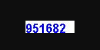
public class ImageServlet extends HttpServlet {
@Override
protected void doGet(HttpServletRequest req, HttpServletResponse resp) throws ServletException, IOException {
//浏览器3s刷新一次
resp.setHeader("refresh","3");
//在内存中创建一个图片
BufferedImage image = new BufferedImage(80,20,BufferedImage.TYPE_INT_RGB);
//得到图片
Graphics2D g = (Graphics2D)image.getGraphics();//画笔
g.setBackground(Color.pink);
g.fillRect(0,0,80,20);
//给图片写数据
g.setColor(Color.BLUE);
g.setFont(new Font(null,Font.BOLD,20));
g.drawString(makeNum(),0,20);
//告诉浏览器，这个请求用图片的方式打开
resp.setContentType("image/jpeg");
//网站存在缓存，不让浏览器缓存
resp.setDateHeader("expries",-1);
resp.setHeader("Cache-Control","no-cache");
resp.setHeader("program","no-cache");
//把图片写给浏览器
ImageIO.write(image,"jpg",resp.getOutputStream());
}
//生成随机数
private String makeNum(){
Random random = new Random();
java.lang.String num = random.nextInt(999999)+"";
StringBuffer sb = new StringBuffer();
for (int i = 0; i < 6-num.length(); i++) {
sb.append("0");
}
num = sb.toString()+num;
return num;
}
@Override
protected void doPost(HttpServletRequest req, HttpServletResponse resp) throws ServletException, IOException {
}
}实现重定向
public void sendRedirect(String location) throws IOException;
resp.sendRedirect("/r/img");HttpServletRequest
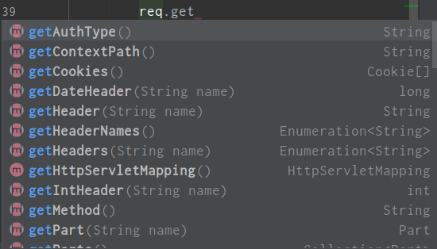
获取前端参数，并请求转发
核心有两个方法：
public String getParameter(String name);
public String[] getParameterValues(String name);//checkbox之类的多值场景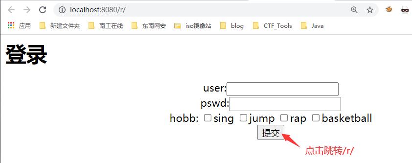
仅提供index.jsp，success.jsp略。
<%--
Created by IntelliJ IDEA.
User: Shgxy
Date: 2021/9/17
Time: 13:44
To change this template use File | Settings | File Templates.
--%>
<%@ page contentType="text/html;charset=UTF-8" language="java" %>
<html>
<head>
<title>此处登陆</title>
</head>
<body>
<h1>登录</h1>
<div style="text-align: center">
<%--表示当前web项目: ${pageContext.request.contextPath}--%>
<form action="${pageContext.request.contextPath}/login" method="post">
user:<input type="text" name="user"> <br>
pswd:<input type="password" name="pswd"> <br>
hobb:
<input type="checkbox" name="hobb" value="sing">sing
<input type="checkbox" name="hobb" value="jump">jump
<input type="checkbox" name="hobb" value="rap">rap
<input type="checkbox" name="hobb" value="basketball">basketball <br>
<input type="submit">
</form>
</div>
</body>
</html>LoginServlet.java，doPost调用doGet，实现Post，或者直接写在doPost里。
public class LoginServlet extends HttpServlet {
@Override
protected void doGet(HttpServletRequest req, HttpServletResponse resp) throws ServletException, IOException {
req.setCharacterEncoding("utf-8");
resp.setCharacterEncoding("utf-8");
String user = req.getParameter("user");
String pswd = req.getParameter("pswd");
String[] hobbs = req.getParameterValues("hobb");
System.out.println("user:"+user);
System.out.println("pswd:"+pswd);
System.out.println(Arrays.toString(hobbs));
//通过请求转发
req.getRequestDispatcher("/success.jsp").forward(req,resp);
}
@Override
protected void doPost(HttpServletRequest req, HttpServletResponse resp) throws ServletException, IOException {
doGet(req, resp);
}
}输出:
// user:admin
// pswd:123123
// [sing, jump, rap]Cookie & Session
错误:java: 错误: 不支持发行版本 5
解决方法：
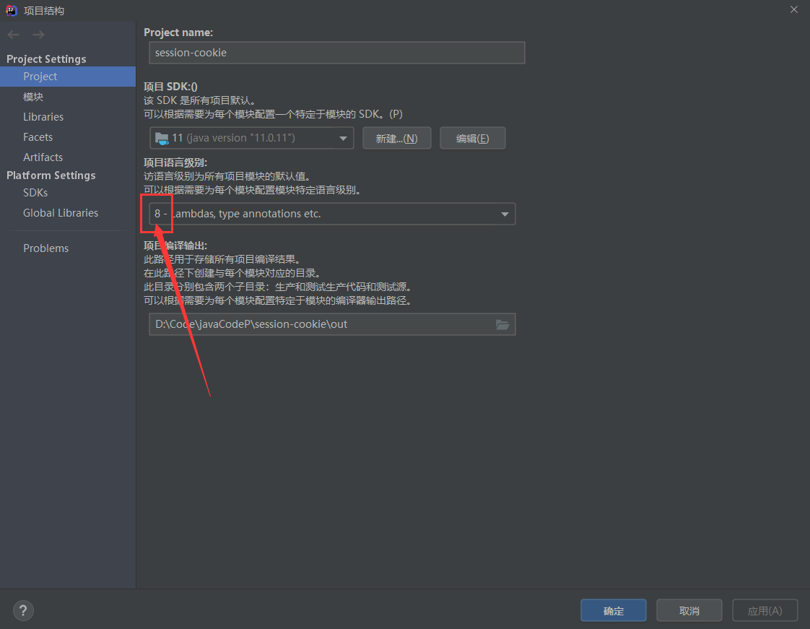
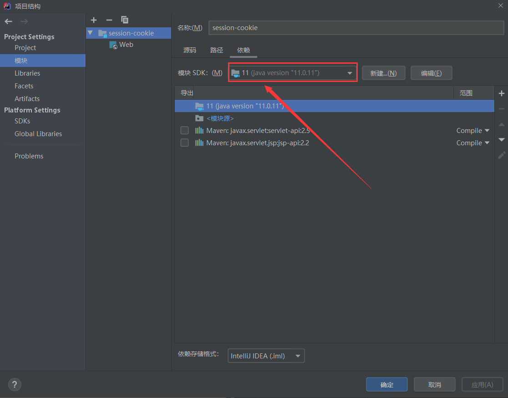
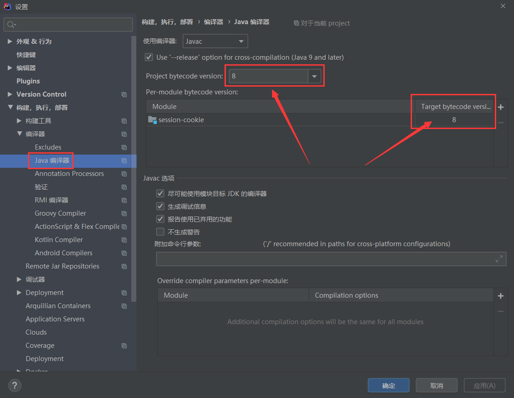
Cookie
- 大小有限制：4kb
- 300个cookie浏览器上限
- 一个web站点最多20个
- 不设置有效期（或设置为0），关闭浏览器，自动失效
Cookie[] cookies = req.getCookies();//获取Cookie列表
getName()//获取cookie的key
getValue()//获取cookie的value
Cookie cookie = new Cookie("lastLoginTime",System.currentTimeMillis()+"");//新建cookie
cookie.setMaxAge(24*60*60);//设置有效期，单位是s
resp.addCookie(cookie);//响应给客户端一个cookieCookieDemo1.java
//保存用户上一次访问的时间
public class CookieDemo1 extends HttpServlet {
@Override
protected void doGet(HttpServletRequest req, HttpServletResponse resp) throws ServletException, IOException {
//解决中文乱码
req.setCharacterEncoding("utf-16");
resp.setCharacterEncoding("utf-16");
//响应的输出对象，一定是由resp来做
PrintWriter out = resp.getWriter();
//Cookie,服务器从客户端获取
Cookie[] cookies = req.getCookies();
//判断Cookie是否存在
if (cookies!=null){
//如果存在怎么办
out.write("上一次的访问时间为:");
for (int i = 0; i < cookies.length; i++) {
Cookie cookie = cookies[i];
//获取cookie的名字
if (cookie.getName().equals("lastLoginTime")){
//获取cookie的值
long lastLoginTime = Long.parseLong(cookie.getValue());
Date date = new Date(lastLoginTime);
out.write(date.toLocaleString());
}
}
}else {
out.write("首次访问本站！");
}
//服务器给客户端响应一个Cookie:
Cookie firstCookie = new Cookie("lastLoginTime", ""+System.currentTimeMillis());
//设置cookie的有效期
firstCookie.setMaxAge(24*60*60);
resp.addCookie(firstCookie);
}
@Override
protected void doPost(HttpServletRequest req, HttpServletResponse resp) throws ServletException, IOException {
}
}解决中文传输乱码：
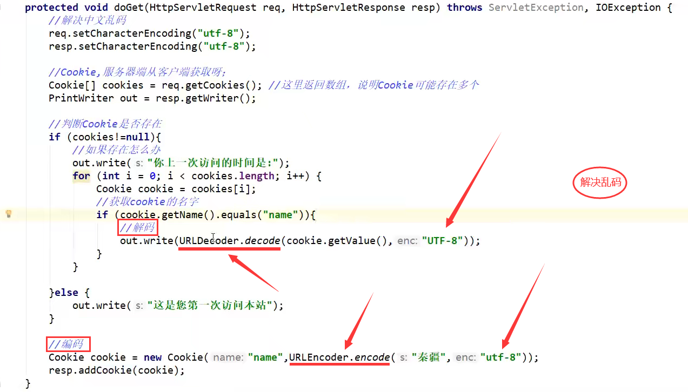
Session
服务器给每一个浏览器创建一个Session对象；
一个Session独占一个浏览器。
核心操作：
HttpSession session = req.getSession(); //获取Session
session.setAttribute("name","admin"); //将Object添加到Session
Person name =(Person) session.getAttribute("name");//读取
String id = session.getId(); //SessionID由服务器创建
req.getSession().removeAttribute("name");//移除session中的某项属性
req.getSession().invalidate(); //用于清除session的所有信息Session可以在web.xml中配置自动过期时间，单位为分钟：
<session-config>
<session-timeout>15</session-timeout>
</session-config>JSP（Java Server Pages）
Java Server Pages：Java服务器端页面，也和Servlet一样，用于动态Wed技术。
相比于原始Servlet的resp.getWriter().write()一行行写标签，JSP写起来和HTML一样流畅。
JSP源码
地址：
C:\Users\Shgxy\.IntelliJIdea2019.3\system\tomcat\Unnamed_session-cookie\work\Catalina\localhost\c\org\apache\jsp目录结构：
C:.
└─Catalina
└─localhost
├─c
│ └─org
│ └─apache
│ └─jsp(在这里)
└─manager该jsp目录下，有java和class两个文件，java中定义了一个类，且继承了HttpJspBase：
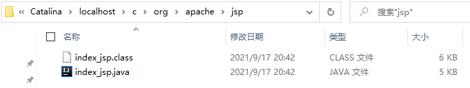
HttpJspBase需要在pom中添加jasper-runtime依赖：
<dependency>
<groupId>tomcat</groupId>
<artifactId>jasper-runtime</artifactId>
<version>5.5.23</version>
</dependency>public final class index_jsp extends org.apache.jasper.runtime.HttpJspBase
implements org.apache.jasper.runtime.JspSourceDependent,
org.apache.jasper.runtime.JspSourceImports{}JSP本质上就是一个Servlet：
// 初始化
public void _jspInit() {}
// 销毁
public void _jspDestroy() {}
// JSP Service
public void _jspService(HttpServletRequest request,HttpServletResponse response){}内置一些对象：
final javax.servlet.jsp.PageContext pageContext;//页面上下文
javax.servlet.http.HttpSession session = null; //session
final javax.servlet.ServletContext application;applicationContext
final javax.servlet.ServletConfig config; //config
javax.servlet.jsp.JspWriter out = null; //out
final java.lang.Object page = this; //page：当前页输出页面前增加的代码：
response.setContentType("text/html");
pageContext = _jspxFactory.getPageContext(this, request, response,
null, true, 8192, true);
_jspx_page_context = pageContext;
application = pageContext.getServletContext();
config = pageContext.getServletConfig();
session = pageContext.getSession();
out = pageContext.getOut();
_jspx_out = out;关系结构如下，其中橘色背景为final修饰的量：
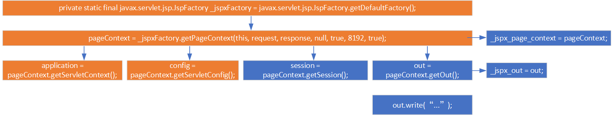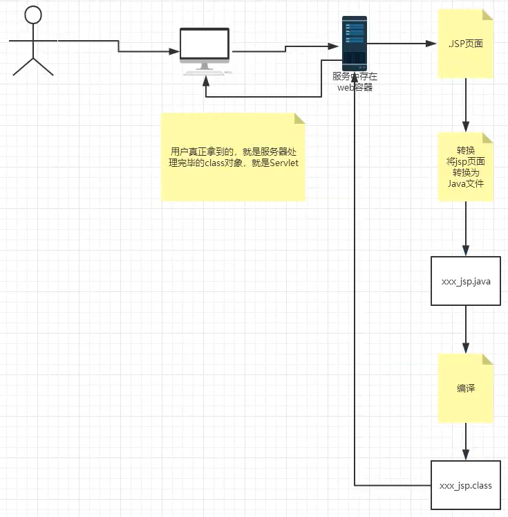
JSP基础语法
搬运自：jazzylee-javaWeb
前面的项目都是直接根据模板新建webapp的，但是需要自行添加java和resource目录。
另外一种新建项目的方法是新建空项目，在项目名处右击，添加框架支持，选择Web Application。这种方式下，web目录不再位于src下，而是与src同级；且web.xml中的version是新版的。
添加依赖
pom.xml
<dependencies>
<!-- Servlet依赖-->
<dependency>
<groupId>javax.servlet</groupId>
<artifactId>servlet-api</artifactId>
<version>2.5</version>
</dependency>
<!-- JSP依赖-->
<dependency>
<groupId>javax.servlet.jsp</groupId>
<artifactId>javax.servlet.jsp-api</artifactId>
<version>2.3.3</version>
</dependency>
<!-- JSTL表达式的依赖-->
<dependency>
<groupId>javax.servlet.jsp.jstl</groupId>
<artifactId>jstl-api</artifactId>
<version>1.2</version>
</dependency>
<!-- standard标签库-->
<dependency>
<groupId>taglibs</groupId>
<artifactId>standard</artifactId>
<version>1.1.2</version>
</dependency>
</dependencies>注释
<%--JSP注释,不会保留在前端页面--%>
<!--HTML注释-->Java语句
分为单行和多行两种，单行的用于表达式输出一个值
<%--单行--%>
<%=new java.util.Date()%>
<hr>
<%--多行--%>
<%
int sum = 0;
for (int j = 0; j < 10; j++) {
sum+=j;
}
<%--还可以使用<%=sum%>输出--%>
out.println(sum);
%>
</body>work目录下的java中，上面的jsp对应于_jspService中的如下部分：
out.write("\n");
out.write("<html>\n");
out.write(" <head>\n");
out.write(" <title>$Title$</title>\n");
out.write(" </head>\n");
out.write(" <body>\n");
out.write('\n');
out.write(' ');
out.write(' ');
out.print(new java.util.Date());
out.write("\n");
out.write("<hr>\n");
out.write(" ");
int sum = 0;
for (int j = 0; j < 10; j++) {
sum+=j;
}
out.println(sum);
out.write("\n");
out.write(" </body>\n");
out.write("</html>\n");前端源码如下：
<html>
<head>
<title>$Title$</title>
</head>
<body>
Mon Aug 02 15:13:03 CST 2021
<hr>
45
</body>
</html>JSP声明
如果要将java语句块生成在_jspService之外，可以使用下面的方式
<%!
public void test(){
System.out.println("当前在test中");
}
%>在work目录下的java中，这个函数会被编译到index_jsp类下。
如果要调用这个函数，需要在jsp中以语句块的形式调用：
<%
test();
%>这样，每次访问jsp页面时，IDEA都会打印前在test中。
DIY错误页面
当JSP中嵌入的Java有异常时，会出现500错误，可以在JSP开头自定义错误页面:
<%@ page errorPage="./500.jsp" %>出现错误时，将展示500.jsp的内容，抓包发现两次请求的状态码都是200。
错误页面的跳转也可以在web.xml中进行配置，location是从项目根目录算起的目录。
两次请求的状态码分别是500和200
<error-page>
<error-code>500</error-code>
<location>/500.jsp</location>
</error-page>web.xml中可设置的更多：
<error-page>
<error-code>500</error-code>
<location>/500.jsp</location>
</error-page>
<error-page>
<error-code>404</error-code>
<location>/404.jsp</location>
</error-page>包含HTML公共页面
可以使用<%@include file="xxx"%>的方式包含页面
<body>
<%@include file="common/header.jsp"%>
<h1>Content-1</h1>
<%@include file="common/footer.jsp"%>
</body>使用这种方式include的页面是直接将被引用的页面原封不动地放到了html中。生成的java如下
out.write("<html>\r\n");
out.write("<head>\r\n");
out.write(" <title>Title</title>\r\n");
out.write("</head>\r\n");
out.write("<body>\r\n");
out.write("<h1>Header</h1>\r\n");
out.write("</body>\r\n");
out.write("</html>\r\n");
out.write("\r\n");
out.write("<h1>Content-1</h1>\r\n");
out.write("\r\n");
out.write("\r\n");
out.write("<html>\r\n");
out.write("<head>\r\n");
out.write(" <title>Title</title>\r\n");
out.write("</head>\r\n");
out.write("<body>\r\n");
out.write("<h1>Footer</h1>\r\n");
out.write("</body>\r\n");
out.write("</html>\r\n");另一种方式是使用jsp标签：
<jsp:include page="/common/header.jsp"/>
<h1>Content-2</h1>
<jsp:include page="/common/footer.jsp"/>使用这种方法是独立地引入了两个页面，java如下：
org.apache.jasper.runtime.JspRuntimeLibrary.include(request, response, "/common/header.jsp", out, false);
out.write("<h1>Content-2</h1>\r\n");
org.apache.jasper.runtime.JspRuntimeLibrary.include(request, response, "/common/footer.jsp", out, false);🔴后者相对独立 (多个页面之间的变量不冲突) ，更加常用。
JSP九大内置对象
九大对象是指：
| 名称 | 备注 |
|---|---|
| pageContext | 存东西 |
| request | 存东西 |
| response | |
| session | 存东西 |
| application | 存东西(ServletContext) |
| config | （ServletConfig） |
| page | 几乎不用 |
| out | |
| exception |
部分关系再次展示如下，橘色表示被final修饰：

能存放数据的四个是重点
<%
pageContext.setAttribute("from","pageContext"); //保存的数据只是在一个页面中有效
request.setAttribute("from","request"); //保存的数据只在一次请求中有效，请求转发会携带这个数据
session.setAttribute("from","session"); //保存的数据只在一次会话中有效，从打开浏览器到关闭浏览器
application.setAttribute("from","application"); //保存的数据只在服务器中有效，从打开服务器到关闭服务器
%>
<%
// out.println(pageContext.getAttribute("from"));
// out.println(request.getAttribute("from"));
// out.println(session.getAttribute("from"));
// out.println(application.getAttribute("from"));
String from = (String) pageContext.findAttribute("from");
out.println(from);
%>使用setAttribute方法可以设置属性，使用getAttribute可以对应取出。
另外一种取出属性的方式是使用pageContext的findAttribute方法。
对于上面这种四处同名的参数，使用pageContext.findAttribute方法取出的是pageContext，因为四种存数据方式有scope上的区别，作用域从小到大依次是 pageContext < request < session < application。
往上寻找，往下使用。
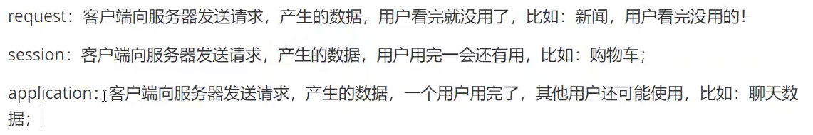
pageContext也有setAttribute方法，
public void setAttribute(String name, Object attribute) {
this.mPage.put(name, attribute);
}
public void setAttribute(String name, Object attribute, int scope) {
switch(scope) {
case 1:
this.mPage.put(name, attribute);
break;
case 2:
this.mRequest.put(name, attribute);
break;
case 3:
this.mSession.put(name, attribute);
break;
case 4:
this.mApp.put(name, attribute);
break;
default:
throw new IllegalArgumentException("Bad scope " + scope);
}
}四种作用域总结如下：
| 作用域 | 说明 |
|---|---|
| pageContext | 只在一个页面中有效 |
| request | 在一次请求中(含请求转发)有效 |
| session | 在一次会话中有效 |
| application | 从打开服务器到关闭服务器都有效 |
JSP/JSTL/EL
导包
<!--JSTL表达式依赖-->
<dependency>
<groupId>javax.servlet.jsp.jstl</groupId>
<artifactId>jstl-api</artifactId>
<version>1.2</version>
</dependency>
<!--标签库-->
<dependency>
<groupId>taglibs</groupId>
<artifactId>standard</artifactId>
<version>1.1.2</version>
</dependency>Expression Language
作用
- 获取数据
- 执行运算
- 获取web开发常用对象
使用
${}JSP
<%--1.include页面--%>
<jsp:include page="/common/header.jsp"/>
<%--2.页面转发(不是重定向)--%>
<jsp:forward page="./include.jsp"/>
<%--转发时候还可以传参数--%>
<jsp:forward page="./include.jsp">
<jsp:param name="name" value="name"/>
<jsp:param name="age" value="18"/>
</jsp:forward>
<%--取参数方法如下-->
<%=request.getParameter("name")%>
<%=request.getParameter("age")%>JSTL(Java server pages Standard Tag Library)
JSTP提供了许多标签，标签的作用同Java代码。
不常用
- 格式化标签
- SQL标签
- XML标签
核心标签⭐
导入
pom.xml
<!-- https://mvnrepository.com/artifact/javax.servlet/javax.servlet-api --> <dependency> <groupId>javax.servlet</groupId> <artifactId>javax.servlet-api</artifactId> <version>4.0.1</version> </dependency> <!-- https://mvnrepository.com/artifact/javax.servlet.jsp/javax.servlet.jsp-api --> <dependency> <groupId>javax.servlet.jsp</groupId> <artifactId>javax.servlet.jsp-api</artifactId> <version>2.3.3</version> </dependency> <!-- https://mvnrepository.com/artifact/javax.servlet.jsp.jstl/jstl-api --> <!-- JSTL表达式依赖--> <dependency> <groupId>javax.servlet.jsp.jstl</groupId> <artifactId>jstl-api</artifactId> <version>1.2</version> </dependency> <!-- https://mvnrepository.com/artifact/taglibs/standard --> <!-- 标签库--> <dependency> <groupId>taglibs</groupId> <artifactId>standard</artifactId> <version>1.1.2</version> </dependency>核心标签是最常用的JSTL标签。JSP中引用核心标签库的语法如下
<%@ taglib prefix="c" uri="http://java.sun.com/jsp/jstl/core" %>另外，要将jstl-api和taglib两个jsr包放到Tomcat的lib路径下
使用
JavaBean
实体类
JavaBean具有特定的写法：
- 必须要有一个无参构造；
- 属性必须私有化；
- 必须有对应的 get/set 方法；
MVC三层架构
- Model
- 业务处理
- 数据持久化
- View
- 展示数据
- 发起Servlet请求
- Controller
- 接收请求
- 控制视图跳转
- 调用业务处理
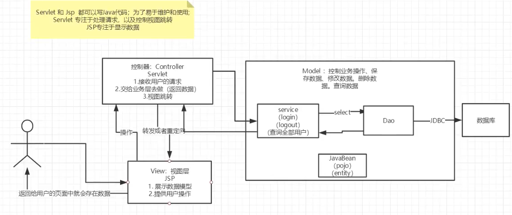
🔴Filter
过滤器，用来过滤网站的数据：
- 处理中文乱码
🔴implements选择下图的Filter，导包别导错。
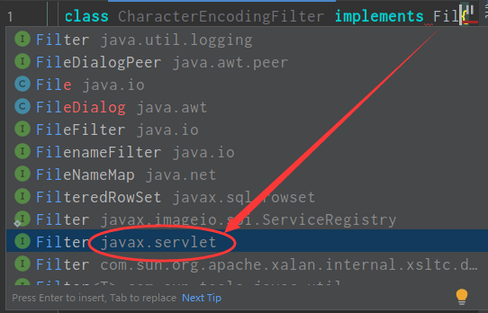
以设置UTF-8编码为例，首先修改编码，然后chain放行
public class CharacterEncodingFilter implements Filter {
//初始化：web服务器启动，就可以初始化了，随时等待过滤对象出现！
public void init(FilterConfig filterConfig) throws ServletException {
System.out.println("✓-CharacterEncodingFilter正在初始化~");
}
public void doFilter(ServletRequest servletRequest, ServletResponse servletResponse, FilterChain filterChain) throws IOException, ServletException {
servletRequest.setCharacterEncoding("utf-8");
servletResponse.setCharacterEncoding("utf-8");
servletResponse.setContentType("text/html;charset=utf-8");
System.out.println("O-CharacterEncodingFilter执行前~");
//让请求继续走，如果filterChain不放行,则程序卡在这里
filterChain.doFilter(servletRequest,servletResponse);
System.out.println("C-CharacterEncodingFilter执行后~");
}
public void destroy() {
System.out.println("X-CharacterEncodingFilter已销毁！");
}
}web.xml中配置：
<filter>
<filter-name>CharacterEncodingFilter</filter-name>
<filter-class>com.shgxy.CharacterEncodingFilter</filter-class>
</filter>
<filter-mapping>
<filter-name>CharacterEncodingFilter</filter-name>
<!-- 只要是/servlet下的任何请求都会经过这个过滤器-->
<url-pattern>/servlet/*</url-pattern>
</filter-mapping>监听器
session监听
实现接口：
import javax.servlet.ServletContext;
import javax.servlet.http.HttpSessionEvent;
import javax.servlet.http.HttpSessionListener;
public class ListenerDemo implements HttpSessionListener {
public void sessionCreated(HttpSessionEvent httpSessionEvent) {
ServletContext servletContext = httpSessionEvent.getSession().getServletContext();
Integer onlineNum =(Integer) servletContext.getAttribute("num");
if(onlineNum==null){
onlineNum = 1;
}else {
onlineNum += 1;
}
servletContext.setAttribute("num",onlineNum);
}
public void sessionDestroyed(HttpSessionEvent httpSessionEvent) {
ServletContext servletContext = httpSessionEvent.getSession().getServletContext();
Integer onlineNum =(Integer) servletContext.getAttribute("num");
if(onlineNum==null){
onlineNum = 0;
}else {
onlineNum -= 1;
}
servletContext.setAttribute("num",onlineNum);
}
}配置监听 web.xml
<listener>
<listener-class>ListenerDemo</listener-class>
</listener>前端展示：
<html>
<body>
<h2>在线人数</h2>
<div style="color: blue">
<%=this.getServletConfig().getServletContext().getAttribute("num")%>
</div>
</body>
</html>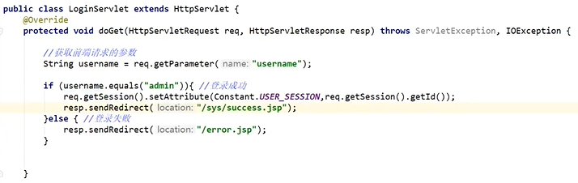
过滤器权限验证：
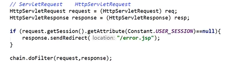
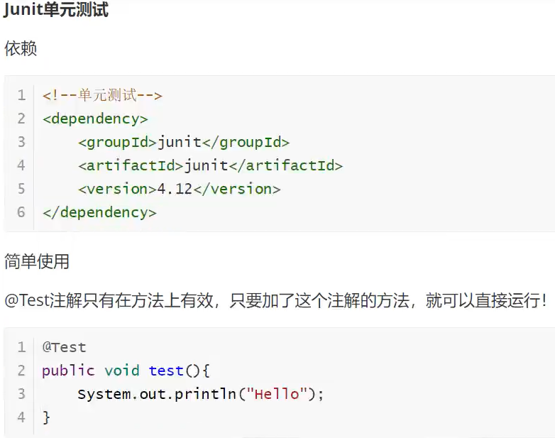
SMBMS
- 本文链接：https://shgxy.github.io.git/2021/08/31/JavaWeb/
- 版权声明：本博客所有文章除特别声明外，均默认采用 许可协议。